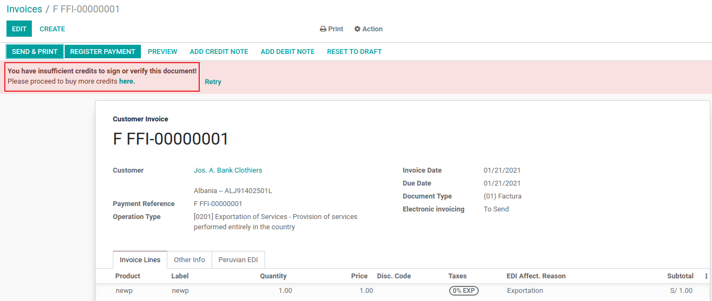
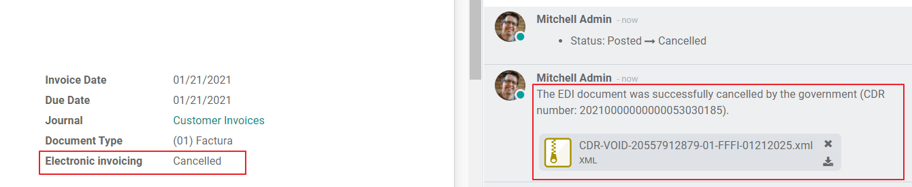

Peru
Modules
Install the following modules to utilize all the current features of the Peruvian localization.
Name |
Technical name |
Description |
|---|---|---|
Peru - Accounting |
|
Adds accounting features for the Peruvian localization, which represent the minimal configuration required for a company to operate in Peru and under the SUNAT regulations and guidelines. The main elements included in this module are the chart of accounts, taxes, document types. |
Peru - E-invoicing |
|
Includes all technical and functional requirements to generate and receive electronic invoices online based on the SUNAT regulations. |
Peru - Accounting Reports |
|
Includes the following financial reports:
|
Peruvian - Electronic Delivery Note |
|
Adds the delivery guide (Gua de Remisin), which is needed as proof that you are sending goods between A and B. It is only when a delivery order is validated that the delivery guide can be created. |
Peruvian eCommerce |
|
Enables the identification type in eCommerce checkout forms and the ability to generate electronic invoices. |
Peruvian - Point of Sale with PE Doc |
|
Enables contact fiscal information to be editable from a PoS Session to generate electronic invoices and refunds. |
Note
Odoo automatically installs the appropriate package for the company according to the country selected at the creation of the database.
The Peruvian - Electronic Delivery Guide module depends on the Inventory application to be installed.
Configuration
Install the Peruvian localization modules
Go to Apps and search for Peru, then click Install in the module Peru EDI. This module has a dependency with Peru - Accounting. In case this last one is not installed, Odoo installs it automatically within EDI.

Note
When you install a database from scratch selecting Peru as country, Odoo automatically installs the base module: Peru - Accounting.
Configure your company
In addition to the basic information in the Company, we need to set Peru as the Country, this is essential for the Electronic Invoice to work properly. The field Address Type Code represents the establishment code assigned by the SUNAT when companies register their RUC (Unique Contributor Registration):

Tip
In case the Address type code is unknown, you can set it as the default value: 0000. Be aware that if an incorrect value is entered, the Electronic invoice validation might have errors.
Note
The NIF should be set following the RUC format.
Chart of Account
The chart of accounts is installed by default as part of the set of data included in the localization module, the accounts are mapped automatically in:
Taxes
Default Account Payable.
Default Account Receivable
The chart of accounts for Peru is based on the most updated version of the PCGE, which is grouped in several categories and is compatible with NIIF accounting.
Accounting Settings
Once the modules are installed and the basic information of your company is set, you need to configure the elements required for Electronic Invoice. For this, go to .
Basic Concepts
Here are some terms that are essential on the Peruvian localization:
EDI: Electronic Data Interchange, which in this refers to the Electronic Invoice.
SUNAT: is the organization that enforces customs and taxation in Peru.
OSE: Electronic Service Operator, OSE SUNATs definition.
CDR: Receipt certificate (Constancia de Recepcin).
SOL Credentials: Sunat Operaciones en Lnea. User and password are provided by the SUNAT and grant access to Online Operations systems.
Signature Provider
As part of the requirements for Electronic Invoice in Peru, your company needs to select a Signature Provider that will take care of the document signing process and manage the SUNAT validation response. Odoo offers three options:
IAP (Odoo In-App Purchase)
Digiflow
SUNAT
Please refer to the sections below to check the details and considerations for each option.
IAP (Odoo In-App Purchase)
This is the default and the suggested option, considering the digital ceritificate is included as part of the service.

What is the IAP?
This is a signature service offered directly by Odoo, the service takes care of the next process:
Provides the Electronic invoice Certificate, so you do not need to acquire one by yourself.
Send the document to the OSE, in this case, Digiflow.
Receive the OSE validation and CDR.
How does it work?
The service requires Credits in order to process your electronic documents. Odoo provides 1000 credits for free in new databases. After these credits are consumed, you need to buy a Credit Package.
Credits |
EUR |
|---|---|
1000 |
22 |
5000 |
110 |
10,000 |
220 |
20,000 |
440 |
The credits are consumed per each document that is sent to the OSE.
Important
If you have a validation error and the document needs to be sent one more time, one additional credit will be charged. Therefore, it is paramount that you verify all information is correct before sending your document to the OSE.
What do you need to do?
In Odoo, once your enterprise contract is activated and you start working in Production, you need to buy credits once the first 1000 are consumed.
As Digiflow is the OSE used in the IAP, you need to affiliate it as the official OSE for your company on the SUNAT website. This is a simple process. For more information, please check OSE Affiliation guide.
Register Digiflow as the authorized PSE, please check PSE Affiliation guide.
Digiflow
This option can be used as an alternative, instead of using the IAP services you can send your document validation directly to Digiflow. In this case you need to consider:
Buy your own digital Certificate: For more detail regarding the official vendor list, and the process to acquire it, please refer to SUNAT Digital Ceritifcates.
Sign a service agreement directly with Digiflow.
Provide your SOL credentials.

SUNAT
In case your company wants to sign directly with the SUNAT, it is possible to select this option in your configuration. In this case you need to consider: - Get the SUNAT Certification process accepted.
Buy your own digital Certificate: For more detail regarding the official vendor list, and the process to acquire it, please refer to SUNAT Digital Ceritifcates.
Provide you SOL credentials.
Important
When using direct connection with the SUNAT, the SOL User must be set with the Company RUT + User
Id. Example: 20121888549JOHNSMITH
Testing environment
Odoo provides a testing environment that can be activated before your company goes into production.
When using the testing environment and the IAP signature, you dont need to buy testing credits for your transactions as all of them are validated by default.
Tip
By default the databases are set to work on production, make sure to enable the testing mode if needed.
Certificate
In case you dont use Odoo IAP, in order to generate the electronic invoice signature, a digital
certificate with the extension .pfx is required. Proceed to this section and load your file and
password.

Multicurrency
The official currency exchange rate in Peru is provided by the SUNAT. Odoo can connect directly to its services and get the currency rate either automatically or manually.

Please refer to the next section in our documentation for more information about multicurrencies.
Configure Master data
Taxes
As part of the localization module the taxes are created automatically with their related financial account and electronic invoice configuration.

EDI Configuration
As part of the taxes configuration, there are three new fields required for electronic invoice, the taxes created by default have this data included, but in case you create new taxes make sure you fill in the fields:

Fiscal Positions
There are two main fiscal positions included by default when you install the Peruvian localization.
Extranjero - Exportacin: Set this fiscal position on customers for Exportation transactions.
Local Peru: Set this fiscal position on local customers.
Document Types
In some Latin American countries, including Peru, some accounting transactions like invoices and vendor bills are classified by document types, defined by the government fiscal authorities, in this case by the SUNAT.
Each document type can have a unique sequence per journal where it is assigned. As part of the localization, the Document Type includes the country on which the document is applicable;the data is created automatically when the localization module is installed.
The information required for the document types is included by default so the user does not need to fill anything on this view:

Warning
Currently the documents supported on customer invoices are: Invoice, Boleta, Debit Note and Credit Note.
Journals
When creating Sales Journals, the following information must be filled, in addition to the standard fields on the Journals:
Use Documents
This field is used to define if the journal uses Document Types. It is only applicable to Purchase and Sales journals, which are the ones that can be related to the different set of document types available in Peru. By default, all the sales journals created use documents.
Electronic Data Interchange
This section indicates which EDI workflow is used in the invoice, for Peru we must select Peru UBL 2.1.

Warning
By default, the value Factur-X (FR) is always displayed, make sure you can uncheck it manually.
Partner
Identification Type and VAT
As part of the Peruvian localization, the identification types defined by the SUNAT are now available on the Partner form, this information is essential for most transactions either on the sender company and in the customer, make sure you fill in this information in your records.

Product
Additional to the basic information in your products, for the Peruvian localization, the UNSPC Code on the product is a required value to be configured.

Usage and testing
Customer invoice
EDI Elements
Once you have configured your master data, the invoices can be created from your sales order or manually. Additional to the basic invoice information described on our page about the invoicing process, there are a couple of fields required as part of the Peru EDI:
Document type: The default value is Factura Electronica but you can manually change the document type if needed and select Boleta for example.

Operation type: This value is required for Electronic Invoice and indicates the transaction type, the default value is Internal Sale but another value can be selected manually when needed, for example Export of Goods.

EDI Affectation Reason: In the invoice lines, additional to the Tax there is a field EDI Affectation Reason that determines the tax scope based on the SUNAT list that is displayed. All the taxes loaded by default are associated with a default EDI affection reason, if needed you can manually select another one when creating the invoice.

Invoice validation
Once you check all the information in your invoice is correct, you can proceed to validate it. This action registers the account move and triggers the Electronic invoice workflow to send it to the OSE and the SUNAT. The following message is displayed at the top of the invoice:

Asynchronous means that the document is not sent automatically after the invoice has been posted.
Electronic Invoice Status
To be Sent: Indicates the document is ready to be sent to the OSE, this can be done either automatically by Odoo with a cron that runs every hour, or the user can send it immediately by clicking on the button Sent now.

Sent: Indicates the document was sent to the OSE and was successfully validated. As part of the validation a ZIP file is downloaded and a message is logged in the chatter indicating the correct Government validation.

In case there is a validation error the Electronic Invoice status remains in To be sent so the corrections can be made and the invoice can be sent again.
Warning
One credit is consumed each time that you send a document for validation, in this sense if an error is detected on an invoice and you send it one more time, two credits are consumed in total.
Common Errors
There are multiple reasons behind a rejection from the OSE or the SUNAT, when this happens Odoo sends a message at the top of the invoice indicating the error details and in the most common cases a hint to fix the issue.
If a validation error is received, you have two options:
In case the error is related to master data on the partner, customer or taxes, you can simply apply the change on the record (example customer identification type) and once it is done click on the Retry button.
If the error is related to some data recorded on the invoice directly (Operation type, missing data on the invoice lines), the correct solution is to reset the invoice to Draft, apply the changes, and then send the invoice again to the SUNAT for another validation.

For more detail please refert to Common errors in SUNAT.
Invoice PDF Report
After the invoice is accepted and validated by the SUNAT, the invoice PDF report can be printed. The report includes a QR code, indicating the invoice is a valid fiscal document.

IAP Credits
Odoos Electronic IAP offers 1000 credits for free, after these credits are consumed in your production database, your company must buy new credits in order to process your transactions.
Once you run out of credits a red label is displayed at the top of the invoice indicating that additional credits are required, you can easily buy them by accessing the link provided in the message.
In the IAP service includes packages with different pricing based on the number of credits. The price list in the IAP is always displayed in EUR.
Special Use cases
Cancellation process
Some scenarios require an invoice cancellation, for example, when an invoice was created by mistake. If the invoice was already sent and validated by the SUNAT, the correct way to proceed is by clicking on the button Request Cancellation:

In order to cancel an invoice, please provide a cancellation Reason.
Electronic Invoice Status
To Cancel: Indicates the cancellation request is ready to be sent to the OSE, this can be done either automatically by Odoo with a cron that runs every hour, or the user can send it immediately by clicking on the button Send now. Once it is sent, a cancellation ticket is created, as a result the next message and CDR File are logged in the chatter:

Cancelled: Indicates the cancellation request was sent to the OSE and was successfully validated. As part of the validation a ZIP file is downloaded and a message is logged in the chatter indicating the correct Government validation.
Warning
One credit is consumed on each cancellation request.
Export invoices
When creating exportation invoices, take into account the next considerations:
The Identification type on your customer must be Foreign ID.
Operation type in your invoice must be an Exportation one.
The taxes included in the invoice lines should be EXP taxes.

Advance Payments
Create the advance payment Invoice and apply its related payment.
Create the final invoice without considering the advance payment.
Create a credit note for the Final invoice with the advance payment amount.
Reconcile the Credit note with the final invoice.
The remaining balance on the final invoice should be paid with a regular payment transaction.
Detraction Invoices
When creating invoices that is subject to Detractions, take into account the next considerations:
All the products included in the invoice must have these fields configured:

Operation type in your invoice must be
1001
Credit Notes
When a correction or refund is needed over a validated invoice, a credit note must be generated, for this just click on the button Add Credit Note, a part of the Peruvian localization you need to prove a Credit Reason selecting one of the options in the list.

Tip
When creating your first credit Note, select the Credit Method: Partial Refund, this allows you to define the credit note sequence.
By default the Credit Note is set in the document type:

To finish the workflow please follow the instructions on our page about Credit Notes.
Note
The EDI workflow for the Credit notes works in the same way as the invoices.
Debit Notes
As part of the Peruvian localization, besides creating credit notes from an existing document you can also create debit Notes. For this just use the button Add Debit Note.
By default the Debit Note is set in the document type.
Electronic delivery guide 2.0
The Gua de Remisin Electrnica (GRE) is an electronic document generated by the shipper to support the transportation or transfer of goods from one place to another, such as a warehouse or establishment. In Odoo, there are several configuration steps needed before you can successfully use this feature.
The use of the gua de remisin electrnica electronic document is mandatory and required by SUNAT for taxpayers who need to transfer their products, except those under the Single Simplified Regime (rgimen nico simplificado or RUS).
Delivery guide types
Sender
The Sender delivery guide type is issued when a sale is made, a service is rendered (including processing), goods are assigned for use, or goods are transferred between premises of the same company and others.
This delivery guide is issued by the owner of the goods (i.e., the sender) at the beginning of the shipment. The sender delivery guide is supported in Odoo.
See also
Carrier
The Carrier delivery guide type justifies the transportation service the driver (or carrier) performs.
This delivery guide is issued by the carrier and must be issued to each shipper when the shipment goes through public transport.
Important
The carrier delivery guide is not supported in Odoo.
Transportation types
Private
The Private transportation type option is used when the owner transfers goods using their own vehicles. In this case, a senders delivery guide must be issued.
Public
The Public transportation type option is used when an external carrier moves the goods. In this case, two delivery guides must be issued: the senders delivery guide and the carriers delivery guide.
Direct submission to SUNAT
The creation of the GRE delivery guide in Odoo must be sent directly to the SUNAT, regardless of the electronic document provider: IAP, Digiflow, or SUNAT.
Required information
Version 2.0 of the electronic delivery guide requires additional information on the general configuration, vehicles, contacts, and products. In the general configuration, it is necessary to add new credentials that you can retrieve from the SUNAT portal.
Cancellations
Both the sender and the carrier can cancel the electronic waybill as long as the following conditions are met:
The shipment has not been initiated.
If the shipment has been initiated, the receiver must be changed before reaching the final destination.
Important
The SUNAT no longer uses the term Anula, but now uses the term Dar de baja for cancellations.
Testing
The SUNAT does not support a test environment. This means that any delivery guides that were generated by mistake will be sent to the SUNAT.
If, by mistake, the waybill was created in this environment, it is necessary to delete it from the SUNAT portal.
Configuration
Important
Electronic senders GRE is currently the only supported type of waybill in Odoo.
The delivery guide is dependent on the Odoo Inventory app, the l10n_pe_edi and l10n_pe modules.
A second user must be added for the creation of electronic documents.
After following the steps to configure the electronic invoicing
and the master data, install the
Peruvian - Electronic Delivery Note 2.0 module (l10n_pe_edi_stock_20).
Next, you need to retrieve the client ID and client secret from SUNAT. To do so, follow the manual de servicios web plataforma nueva GRE.
Note
In the SUNAT portal, it is important to have the correct access rights enabled, as they may differ from the user set for electronic invoicing.
These credentials should be used to configure the delivery guide general settings from .

Note
It is required to follow the format RUC + UsuarioSol (e.g., 20557912879SOLUSER) for the
Guide SOL User field, depending on the user selected when generating the GRE API
credentials in the SUNAT portal.
Operator
The operator is the vehicles driver in cases where the delivery guide is through private transport.
To create a new operator, navigate to and fill out the contact information.
First, select Individual as the Company Type. Then, add the Operator License in the Accounting tab of the contact form.
For the customer address, make sure the following fields are complete:
District
Tax ID (DNI/RUC)
Tax ID Number

Carrier
The carrier is used when the delivery guide is through public transport.
To create a new carrier, navigate to and fill out the contact information.
First, select Company as the Company Type. Then, add the MTC Registration Number, Authorization Issuing Entity, and the Authorization Number.
For the company address, make sure the following fields are complete:
District
Tax ID (DNI/RUC)
Tax ID Number

Vehicles
To configure the available vehicles, navigate to and fill in the vehicle form with the information needed for the vehicle:
Vehicle Name
License Plate
Is M1 or L?
Special Authorization Issuing Entity
Authorization Number
Default Operator
Company
Important
It is important to check the Is M1 or L? checkbox if the vehicle has fewer than four wheels or fewer than eight seats.

Products
To configure the available products, navigate to and open the product to be configured.
Make sure that the applicable information in the product form is fully configured. The Partida Arancelaria (Tariff Item) field needs to be completed.
Generating a GRE
Once the delivery from inventory is created during the sales workflow, make sure you complete the GRE fields on the top-right section of the transfer form for the fields:
Transport Type
Reason for Transfer
Departure start date
It is also required to complete the Vehicle and Operator fields under the Guia de Remision PE tab.
The delivery transfer has to be marked as Done for the Generar Guia de Remision button to appear on the left menu of the transfer form.

Once the transfer form is correctly validated by SUNAT, the generated XML file becomes available in the chatter. You can now print the delivery slip that shows the transfer details and the QR code validated by SUNAT.

Common errors
Diferente prefijo para productos (T001 en algunos, T002 en otros)At the moment, Odoo does not support the automation of prefixes for products. This can be done manually for each product output. This can also be done for non-storable products. However, keep in mind that there will be no traceability.
2325 - GrossWeightMeasure - El dato no cumple con el formato establecido "Hace falta el campo" "Peso"" en el productoThis error occurs when the weight on the product is set as
0.00. To fix this, you need to cancel the waybill and recreate it. Make sure that you fix the weight on the product before creating the new waybill, or it will result in the same error.JSONDecodeError: Expecting value: line 1 column 1 (char 0) when creating a Delivery GuideThis error is typically generated due to SOL user issues. Verify the users connection with the SUNAT; the SOL user must be established with the company RUT + user ID. For example
2012188549JOHNSMITH.El nmero de documento relacionado al traslado de mercanca no cumple con el formato establecido: error: documento relacionadoThe Related Document Type and Related Document Number fields only apply to invoices and receipts.
400 Client error: Bad Request for URLThis error is not solvable from Odoo; it is advised you reach out to the SUNAT and verify the user. It may be necessary to create a new user.
Invalid content was found starting with element 'cac:BuyerCustomerParty'This error occurs when the transfer reason is set as other. Please select another option. Following to the official documentation of the SUNATs waybill guide, the transfer reasons 03 (sale with shipment to third party) or 12 (others) does not work in Odoo, since you should not have an empty or blank customer.
Duda cliente: consumo de crditos IAP al usar GRE 2.0For live clients using IAP, no credit is consumed (in theory) because it does not go through the OSE, i.e., these documents are directly sent to the SUNAT.
Errores con formato credenciales GRE 2.0 (traceback error)Odoo currently throws an error with a traceback instead of a message that the credentials are not correctly configured in the database. If this occurs on your database, please verify your credentials.
eCommerce electronic invoicing
First, install the Peruvian eCommerce (l10n_pe_website_sale) module.
The Peruvian eCommerce module enables the features and configurations to:
allow clients to create online accounts for eCommerce purposes;
support required fiscal fields in the eCommerce application;
receive payments for sales orders online;
generate electronic documents from the eCommerce application.
Note
The Peruvian eCommerce module is dependent on the previous installation of the Invoicing or Accounting app, as well as the Website app.
Configuration
After configuring the Peruvian electronic invoicing flow, complete the following configurations for the eCommerce flow:
Client account registration;
Automatic invoice;
../../websites/ecommerce/products: Set the Invoicing Policy to Ordered quantities and define the desired Customer taxes.
../../websites/ecommerce/checkout_payment_shipping/shipping: For each shipping method, set the Provider field to Fixed Price. Then, set a Fixed Price amount greater than
0.00(not zero), as the shipping method price is added to the invoice line.
Note
Mercado Pago is an online payment provider supported in Odoo that covers several countries, currencies, and payment methods in Latin America.
Make sure to define a Sales Price on the Delivery Product of the shipping method to prevent errors when validating the invoice with SUNAT.
To offer free delivery, manually remove the Delivery Product, or at least use
$0.01(one cent) for the invoice to be validated with SUNAT.
Invoicing flow for eCommerce
Once the configurations are all set, fiscal input fields will be available during the checkout process for signed-in customers.
When customers enter their fiscal data at checkout and complete a successful purchase, the invoice is generated with the corresponding EDI elements. The document type (Boleta/Factura) is selected based on their tax ID (RUC/DNI). The invoice must then be sent to the OSE and the SUNAT. By default, all published invoices are sent once a day through a scheduled action, but you can also send each invoice manually if needed.
Once the invoice is validated with SUNAT, customers can download the .zip with the CDR,
XML, and PDF files directly from the customer portal by clicking the Download button.